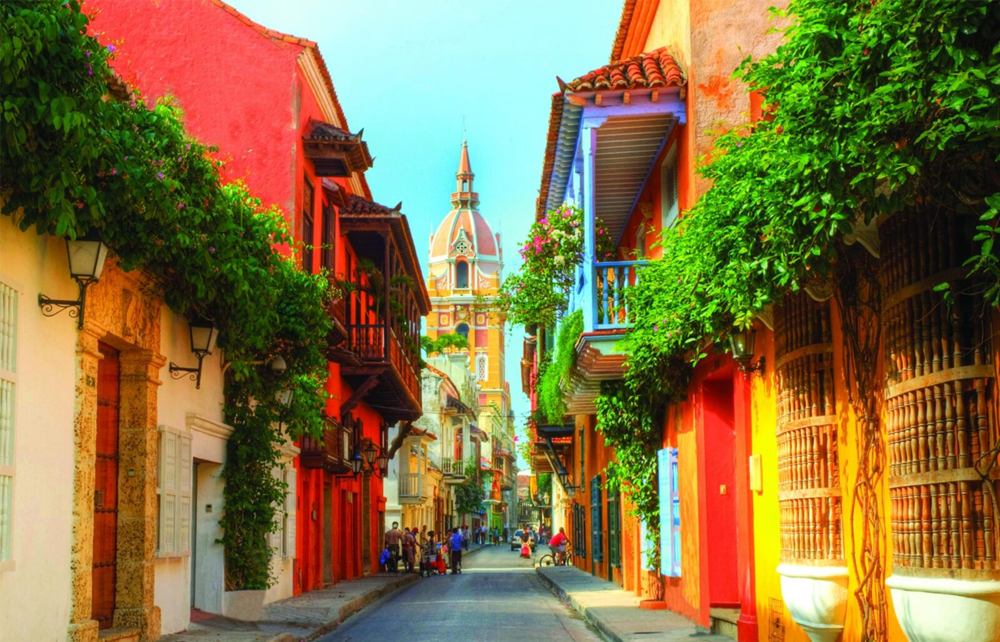

Rafael & Victoria — País do ritmo, cor e sabor
123 obras de Fernando Botero + 85 peças de Picasso, Dalí, Miró e Monet no acervo pessoal do artista.
Trilhas andinas por fazendas tradicionais, florestas nativas e miradouros com paisagens espetaculares. Guiado por expertos locais.
Selecione, lápide e crie seu próprio anel de esmeralda colombiana com joalheiro mestre. Certificado de autenticidade incluso.
Vista panorâmica dos Andes ao pôr do sol. Sugestões: Azul Bistró, Marea Rooftop ou Andrés DC Rooftop. 🥂
Voo livre até 150m de altitude sobre as águas cristalinas do Caribe colombiano. Vistas de Cartagena, Islas del Rosário e Barú.
Maior fortaleza espanhola das Américas + snorkeling em recifes de coral protegidos no Parque Nacional Natural.
Street art vibrante e vida boêmia no bairro mais autêntico + praia paradisíaca em Isla de Barú.
Voo livre sobre as águas multicolores que deram fama mundial à ilha. Perspectiva única e inesquecível.
Ilhéu paradisíaco, piscina natural formada por rochas e pôr do sol com vistas espetaculares.
Snorkeling com tartarugas e raias + tour completo de buggy: de Punta Norte às fazendas de coco no interior.